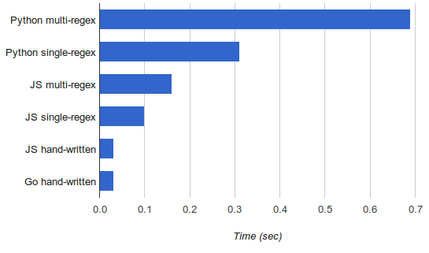

Last year I was toying with a simple lexer (for the TableGen language, because why not), implementing it using multiple approaches in both Python and Javascript. Redoing the same task using multiple approaches and using more than one language is a very interesting code kata and a great way to learn.
Since I've been recently looking at Go, I continued the exercise by reimplementing the lexer (the hand-written one, not a regex-based) in Go. The full code is available here (along with a large input file used for benchmarking).
Naturally, since my previous posts did performance comparisons between Python and Javascript, I wanted to add Go to the graph. I also had to rerun all the benchmarks because from the time of writing those posts I got a new, much faster, machine.
Anyway, here it is:
Since Python is so slow here, it's hard to see the difference between the fastest versions, but the handwritten Go lexer is roughly on par with the Javascript one (33 vs. 31 msec). The benchmarks were run on my i7-4771 machine (amd64); go1.2.1, Node.js v0.10.26.
Now, this is quite literally the first non-trivial Go program I've written and I'm a neophyte by all measures, so any tips on the code would be very welcome. I tried to stay faithful to the Javascript implementation in terms of the algorithm, so the comparison would be fair.
That said, shortly after completing the code I started wondering if it could be made faster. There's something about Go that makes you think about performance on a low level, not unlike when programming in C. Maybe it's because so many things are explicit - pointers, slices, etc.
Anyhow, the code that uses a lexer to fill in a slice of tokens caught my eye:
toks := []Token{}
startTime := time.Now()
for {
nt := nl.NextToken()
toks = append(toks, nt)
if nt.Name == EOF {
break
}
}
That toks = append(toks, nt) in particular. As the size grows, toks will have to be reallocated and all its contents copied over. Since the input in my case had close to 200000 tokens and reallocation doubles the slice size, this means that in the order of 16 reallocations have to happen here, each time copying all the elements over. If that sounds like a lot of wasted work to you, that's because it is.
So I tried replacing the first line with:
toks := make([]Token, 0, 200000)
And wow, the runtime dropped from 33 to 20 ms, making it 33% faster than the JS version. To be fair to JS I tried to perform the same optimization there (instead of pushing onto an array, create a large one in advance), but this has actually made things slower. Some sources online claim that V8 (which is what I'm running underneath, since my local code runs on Node.js) doesn't like preallocating large arrays.
So as is often the case with benchmarks, it's difficult to do an apples-to-apples comparison here. A hunch tells me that in a fully optimized (by a programmer skilled in the language) version of this benchmark, Go would still win, because its nature (typed, compiled to native code, and exposing a lot of low-level details) make it easier to reason about in terms of performance. But performance was not really the point here - I just wanted to see how easy it is to reimplement the same lexer in Go.
Hopefully the code would be useful/interesting to someone; please let me know what I could've done better.
Update (2022-05-03): A newer version of Go and some additional optimizations make this lexer more than 3x faster. See details in this post.